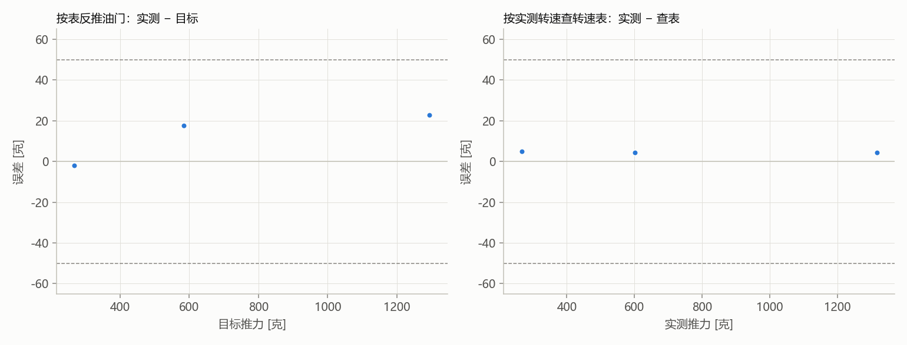

3 个目标实测完成，跳过 0 个；按表反推：平均误差 14 克，最大 23 克，3/3 个在 ±50 克内。按实测转速查转速表：平均误差 5 克，最大 5 克。停止原因：user_stop。表：a5f0068bb431。

| 序号 | 目标 [克] | 油门 [%] | 电量 [V] | 实测 [克] | 误差 [克] | 转速表查值 [克] | 转速表误差 [克] | 备注 |
|---|---|---|---|---|---|---|---|---|
| 1 | 584 | 45.7 | 12.39 | 602 | 18 | 597 | 4 | |
| 2 | 1294 | 79.2 | 12.40 | 1317 | 23 | 1312 | 4 | |
| 3 | 268 | 27.6 | 12.54 | 266 | -2 | 261 | 5 |